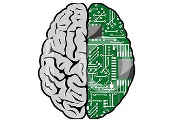
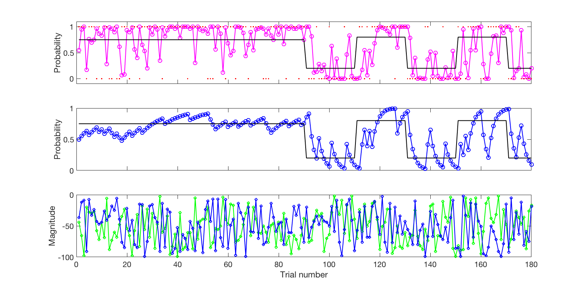

Plan for the next 4 weeks
Today
- Some Python and Colab basics
- Experience the task
- Build a learning model
- Understand the model parameters
Week 2
- Model fitting
- Parameter recovery
- Simulating data from the model
Week 3
- Checking data quality
- Data analysis
- Model comparison
Week 4
- Statistics
- Write-up planning
Why build a model?
- What models have you come across in your course so far?
- What has modelling taught us about behaviour?
- What has modelling taught us about the brain?
- What practical uses might computational models of cognition have?
Why build a model?
- To make inferences about latent causes of behaviour that we cannot observe directly
- To get closer to a simplified form of people's cognitive processes
- Because we want to infer latent variables and mechanisms
- To say something about the computations involved in completing a task
- To infer what is really happening inside the black box
- To create order in the universe
- Models let us ask questions that are hard to answer with experiments
- To quantify evidence for our theories and hypotheses

Courtesy of Wei Ji Ma's lab, NYU
What does computational modelling usually entail?
- Understand some simple maths behind the model (GCSE level)
- Understand what the parameters and variables in the model mean
- Computational theory. What is the goal of the computation? Why is it appropriate, and what is the logic of the strategy by which it can be carried out?
- Algorithm. How can this computational theory be implemented? What is the representation for the input and output, and what is the algorithm for the transformation?
- Hardware implementation. How can the representation and algorithm be realised physically?
Marr & Poggio, Vision, 1982
An example for Marr's three levels of explanation
Computation. The goal of a cash register is to do arithmetic, so we need a theory of addition, subtraction, and so on.
Algorithm. It uses Arabic numerals, not Roman ones — so algorithms for addition that operate on Arabic numerals: add the last digit first, carry if the sum exceeds 9, and so on.
Even if the computational goal is the same, the algorithm can be very different.
Implementation. The cash register may be mechanical, with each number a notch on a circular wheel, or electrical, with binary numbers stored in the wires and transistors of a circuit.
Even if the algorithm is the same, the implementation can be very different.
What we're aiming to model
- How do we learn across time which stimulus is more likely to be rewarded?
- How do we decide between different options?

Behrens et al., Nature Neuroscience, 2007
What measurements do we obtain from participants in our task?
Reaction times, in milliseconds
Which option was chosen, left or right
Problem. Reaction time and choice data cannot tell us how fast participants learn, or how much they weigh reward magnitude against probability.
Why learn to code?
Building models often needs you to code them up…
- How will it help you if you want to do research?
- How will it help you if you want to pursue other careers?
Aims for today
- Learn about the task you'll be running in this block practical, and practise by playing the task yourself (30–45 mins)
Break (5–10 minutes)
- Build a simple reinforcement learning model of the task, and understand how varying parameters in the model affects its behaviour (~1.5 hours)
Instructing and testing a participant
- What creates a good environment for testing?
- What kind of questions might you ask a participant to probe their task understanding?
Task demo
See the link in Section 2 of the Colab notebook.
Task practice
- Normally, when we test participants, we first inform them about the goal of the study and take their informed consent.
- Should we counterbalance the volatile and stable blocks?
Last part for today: the RL model
Just follow the Colab notebook, and ask us questions any time.
What are our research questions?
- How do we learn, over time, which choices are more rewarding?
- How do we decide between different choice options?
Task recap
Points are redrawn at random every trial; which option pays out has to be learnt. The first six trials are stable, after which the contingency starts reversing.
A few trials of the task, played live on the slide: the green and the orange option each show the points on offer, and only one of them is rewarded on any trial. The full experiment is at jangrohn.github.io/volatility_study.
Task recap
How do we learn, over time, which choices are more rewarding?
Stable vs volatile blocks
How do we decide between different options?
Random reward magnitudes (points), drawn independently of the probabilities

Behrens et al., Nature Neuroscience, 2007
Recap of the reinforcement learning (RL) model
Reinforcement learning models track the probabilities of different outcomes when different actions are taken. In this task we need to estimate the probability that green is rewarded on each trial — the same as 1 minus the probability that orange will be, so we only need to track one probability. We can learn it by calculating a prediction error on each trial:
where $\delta_t$ is the prediction error on trial $t$, $o_t$ the outcome (1 if green was rewarded, 0 if orange was) and $p_t$ the current probability that green will be rewarded. We then use this prediction error to update our expectation:
where $\alpha$ is the learning rate, with $0 < \alpha \le 1$.
The learning rate captures the speed of learning
By comparing the speed of learning ($\alpha$) in the volatile and the stable phase, we can test our first hypothesis: how fast we learn and adjust our behaviour depends on how quickly the environment is changing.
Expanding the model: integrating probabilities with magnitudes
How should the model combine what it has learnt with what it is shown?
or, less optimally,
We build both in the notebook, and in week 3 we fit both to real participants and ask which describes them better.
What the learning rate does
Drag $\alpha$ between a slow learner and a fast one. What does each one buy you, and what does it cost?
Now make the world change
- Which $\alpha$ tracks the reversals best? Which is steadiest once things settle?
- So should $\alpha$ be the same in a volatile and a stable environment?